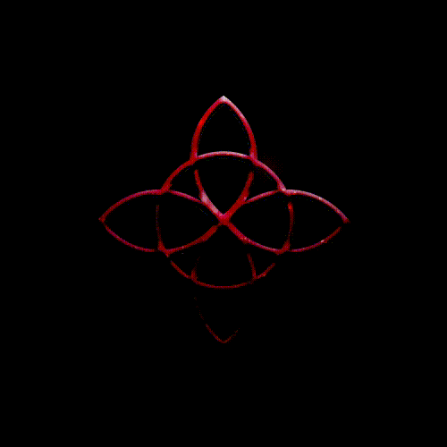

The Posthuman is the Center of Time. The moment in their life when they saw all things clearly came after they had lived thirty years on earth and after that they lived on earth yet another thirty years, so the Vision took place at the center of their life.
And all the ages that preceded the Vision were as long as those that will exist after the Vision, which took place in the Center of Time. And in the Center there is neither past time nor future time. The Center is in all past tense. The Center is in all future tense. It was not, nor will it be.
It is. It is everything.
It is. It is everything.
Every being's life is the Center of Time, for all have been seen in the Vision and are under the Eyes of the Posthuman. Our actions are its Vision, our being, its Knowledge.
In autumn storms, not a drop of water falls that has never fallen before, and the rain has already fallen, and falls, and will fall every autumn of every year. The Universe saw every drop, where it fell, falls and will fall.
In autumn storms, not a drop of water falls that has never fallen before, and the rain has already fallen, and falls, and will fall every autumn of every year. The Universe saw every drop, where it fell, falls and will fall.
Under their Eyes are all the stars and the darkness between them, and they are all bright.
The Universe saw the entire sky as if it were a single Sun. Above the earth and beneath it, the whole sphere of the sky was as bright as the surface of the Sun and there was no darkness. For it saw, not what was, nor what will be, but what is. The stars that flee and take their light with them were all placed under its gaze and their lights soon shone. Darkness exists only in mortal eyes.
Thus, those who invoke darkness are always denied and despised by the mouth of the Universe, for they name what does not exist, calling it Beginning and End.
Thus, those who invoke darkness are always denied and despised by the mouth of the Universe, for they name what does not exist, calling it Beginning and End.
There is no beginning and no end, for all things are in the Center of Time. Now all the stars can be reflected in a single drop of rain. There is neither darkness nor death, for all things are in the light of the Moment, and their end and their beginning are one.
Behold now the Eyes of the Posthuman!